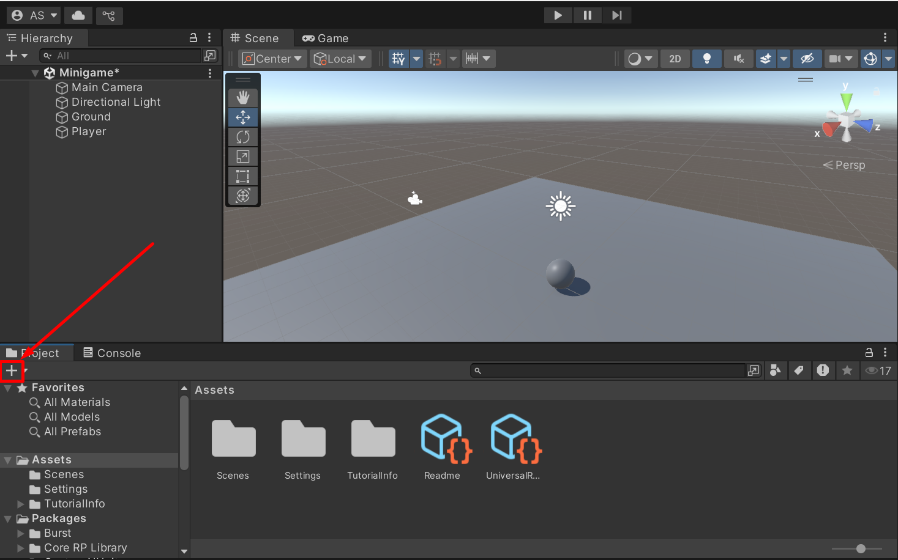
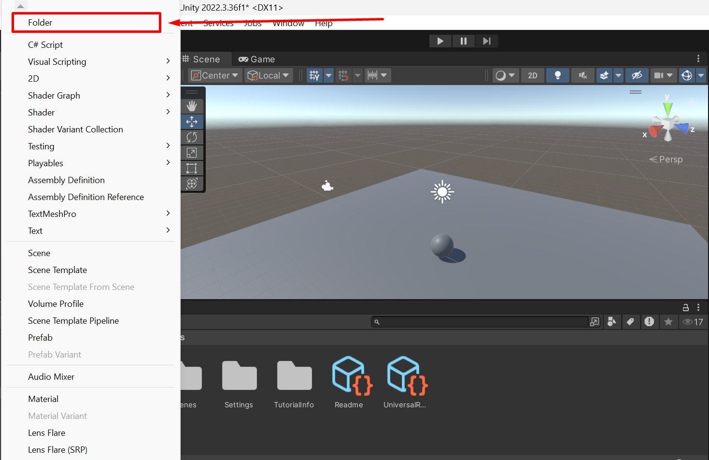
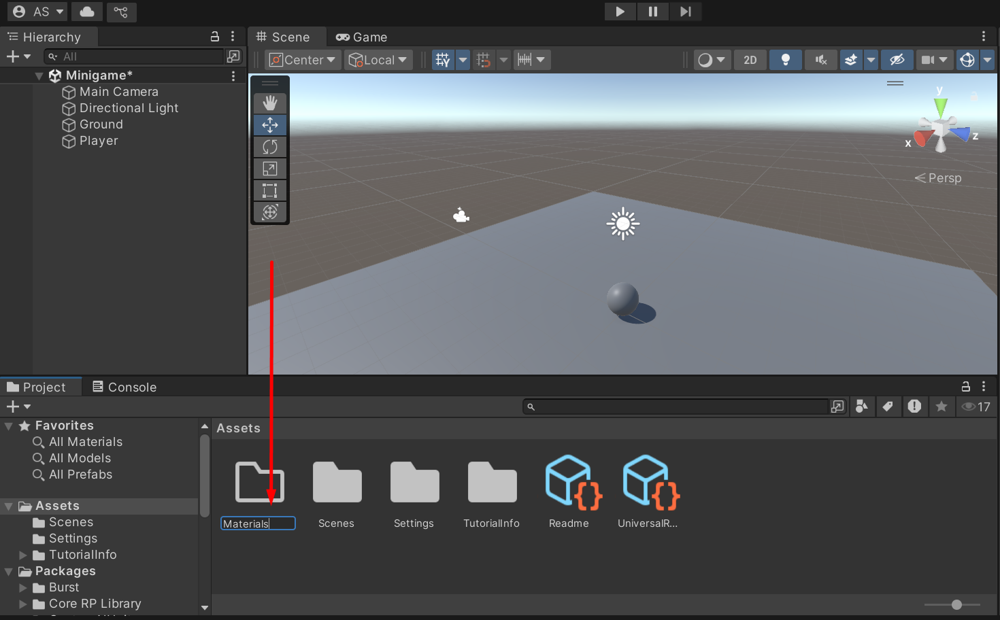
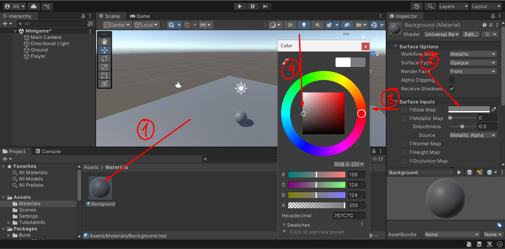
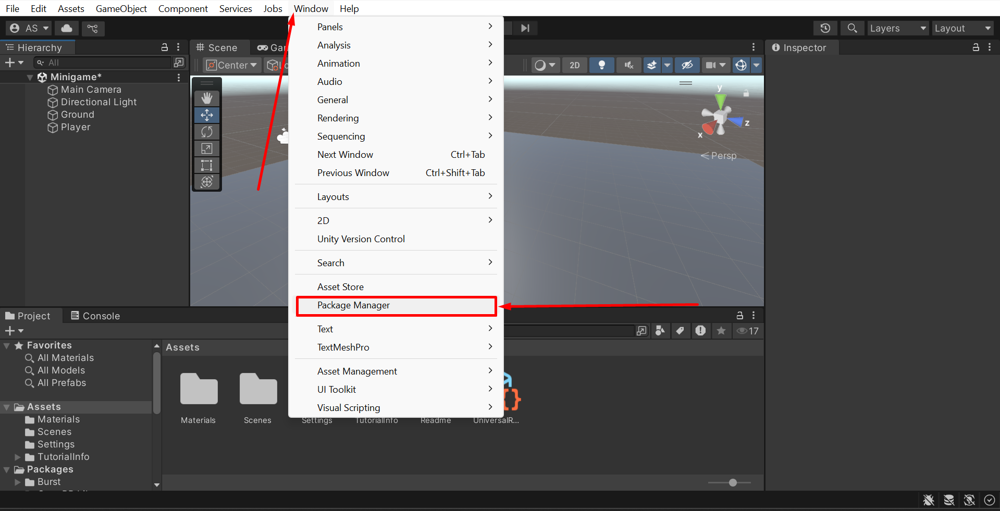
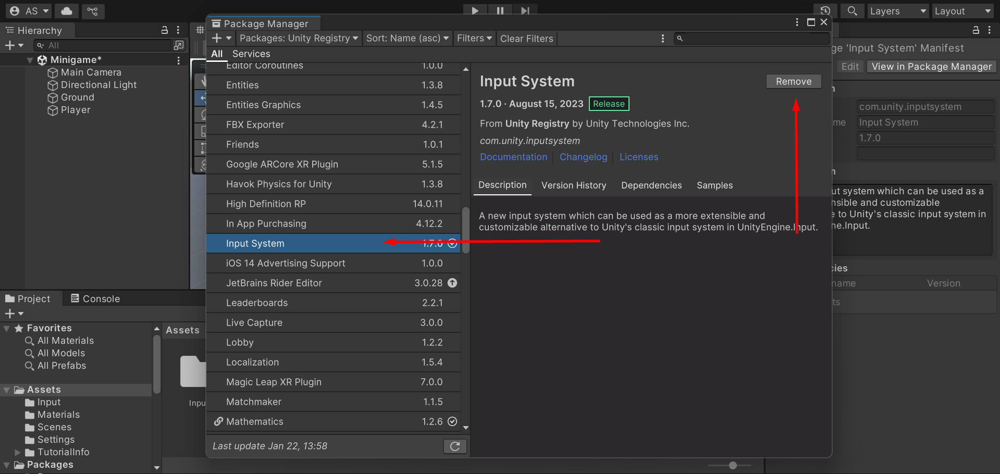

Preparations
For Lab 2, I followed the instructions on learn.unity.com, a website for learning Unity. There are some step-by-step tutorials on how to create different simple applications. Following these tutorials helped me get acquainted with Unity.
What I found interesting is that I could connect with my Unity ID and track my progress.
Create New Scene
The first thing I did was create a new scene:
- In the top right corner, I opened Layout (Screenshot 16) and clicked Default (Screenshot 17).
- Then, I went to File -> New Scene -> Basic URP (default option) -> Create.
- After creating the scene, I saved it: File -> Save As, then saved it in the Scenes folder and named it Minigame.
Create Plane
To create a plane:
- Open GameObject (or the “Plus” symbol in Hierarchy) -> 3D Object -> Plane. This adds a plane to the scene.
- Then, in the Inspector panel, I renamed the Plane to Ground, as it will serve as the base for all other objects.
- Under Transform, I clicked on the 3 dots -> Reset to place the ground at the center of the scene with coordinates (0,0,0).
- I changed the size of the Plane to 2x2 by modifying the Scale. While it's possible to use the Scale Tool, I preferred entering exact values in Transform -> Scale in the Inspector.
Create a Sphere
By clicking “Plus” in Hierarchy -> 3D Object -> Sphere
To better see the sphere, I pressed the F key, and the camera moved closer to the Player.
To make it seem like the sphere is standing on the plane, I moved it up by half of its size— in my case, 0.5 on the Y-axis.
Set Lighting & Materials
All Unity scenes come with a skybox and a directional light that represents the sun.
To change the color of the directional light, I selected it in the Hierarchy and reviewed it in the Inspector. Under Light -> Emission -> Color, I changed the color to white to better see the objects in their default color.
To make the Player stand out, I decided to add color:
- I created a Materials folder by clicking on Plus in the Project section -> Folderand named it Materials.
- Inside the Materials folder, I right-clicked -> Create -> Material to create a new material.
- I selected the Background material, changed the Base Color to a darker gray , and applied it to the Plane by dragging the material onto the scene.
- Similarly, I created a Player material, picked a nice blue color, increased the smoothness slightly to add a shine effect, and applied it to the Sphere.
At the end, I had a blue-colored ball standing on the gray ground.
To finish the setup, I rotated the lighting slightly to make the ball stand out more.
Get It Moving
To make the ball move, we first need to add physics.
For that, I added a Rigidbody component to the Player as explained in the screenshot below.
Add Player Input
To quickly set up Player movement, I needed to add a Player Input component, just like I did with Rigidbody.
However, I couldn’t find the Player Input component in the list of available components.
After searching online, I found in the Unity documentation that to use The Input System, it needed to be installed first.
I followed the installation guide:
- Opened Window -> Package Manager .
- Found Input System and clicked Install.
- Agreed to all confirmation windows .
After installing the Input System, I was able to add a Player Input Component.
Moving a camera
First, I positioned the camera with a Y position of 10 and an X rotation of 45.
Then, I created a New Script Component for the Main Camera Object, called it CameraController, and saved it to the Scripts folder the same way I did for PlayerController.
I added some code to the file CameraControllerCode1.png, saved it, and returned to Unity.
As a result, I could see the Player field in Camera Controller in the Inspector.
The next step was to drag the Player object to this field.
And here we are— the Main Camera follows the ball.
Setting up a Play area
I created a new hierarchy. It will be the walls of the play area.
I reset its transform so that it was on the same level as our playground.
Then, I created the West Wall as a child of this object.
I chose the size of the West Wall and positioned it on the side of the area.
Then, I created a material the same way I created it last time and applied the Wall material.
Finally, I created the other walls by duplicating the West Wall and changing the Transform values.
Create Collectibles
I created a new object PickUp, scaled it, and added a new material (copied from the background and changed its color).
Then, I created a Prefabs folder and dragged PickUp there. After that, the PickUpParent object was created, and the PickUp object was dragged to be its child.
For the next step, I changed the tool handles in the Scene view to Global coordinates rather than Local.
I added a new Script so that the cubes rotate.
Actually Picking Up PickUps
The first thing I did was edit the PlayerController
Then, in the Prefabs folder, I selected the PickUp object. In the Inspector, under the Tag dropdown, I clicked Add -> “+” and added a tag named PickUp.
After that, I went to Prefabs -> PickUp again and in the Tag dropdown, I selected the “PickUp” tag I created before.
Then, I checked IsTrigger, modified the OnTriggerFunction, and now the player can “eat” my spinning cubes.
Every time I checked that all the PickUp children had the same parameters, but they never did, so I had to manually check IsTrigger and assign the PickUp tag for each of them.
At the end, in Prefabs -> PickUp -> Inspector, I added a Rigidbody, checked IsKinematic, and unchecked UseGravity.
And this is how I created my first project in Unity.
Go to the next project